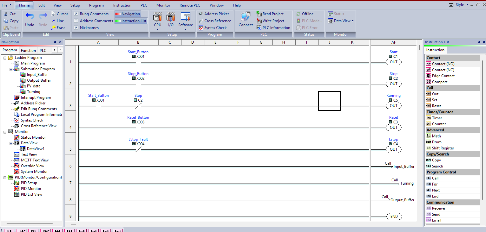
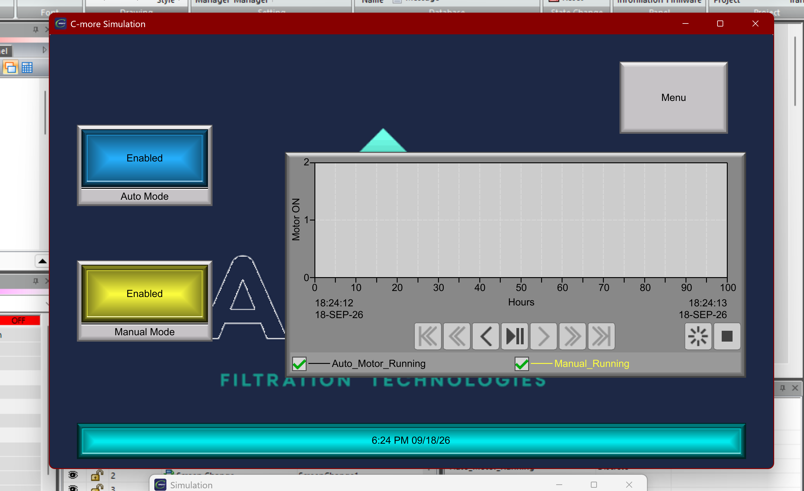
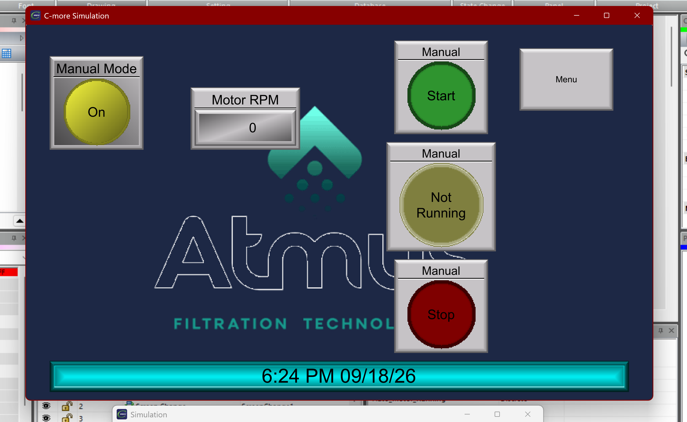
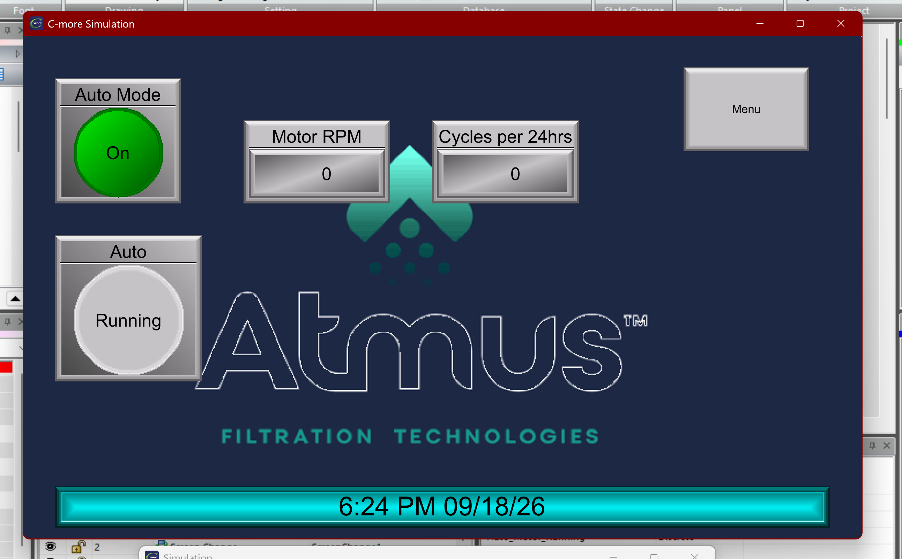
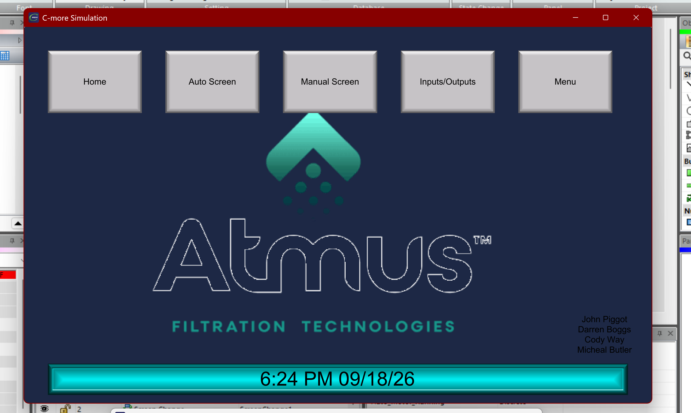
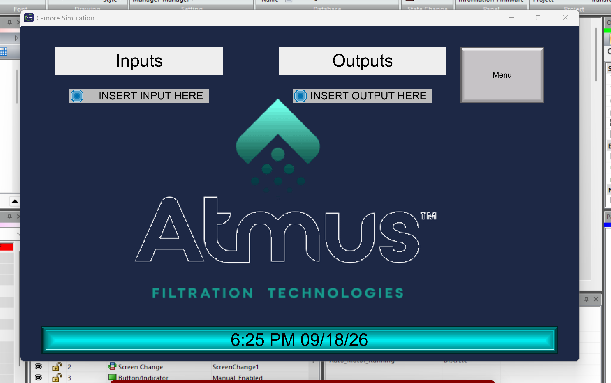
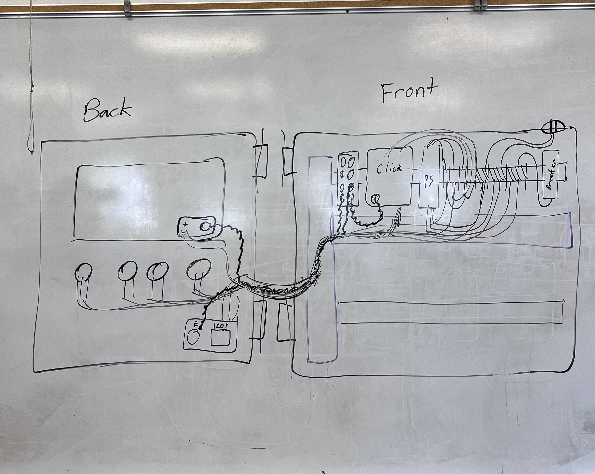

Senior Design
Automated Polyurethane Agitator
Senior design project completed for Atmus Filtration Technologies. The goal of the project was to automate a polyurethane agitation process that previously required manual rotation on a scheduled basis.
Project Overview
The system was designed to rotate the agitator automatically, complete a required number of turns, and use encoder feedback to confirm that the expected motion actually occurred.
My Role
- PLC programming and sequence development
- HMI screen development
- Motor and gearbox selection
- Encoder integration
- Electrical enclosure layout
- Power distribution and wiring design
- Controls troubleshooting and system integration
System Requirements
- Complete 10 agitator rotations per cycle
- Confirm completed rotations using encoder feedback
- Operate at approximately 50 RPM
- Provide approximately 10 in-lb of required torque
- Provide manual controls through the HMI
- Use a compact industrial control enclosure
Controls & Automation
The controls system uses a CLICK Plus PLC and a C-more HMI. The PLC handles the automatic sequence, operator commands, interlocks, motor control, and encoder confirmation.
PLC Logic Development
Initial PLC logic was developed to establish the automatic sequence, operator controls, timing, interlocks, and rotation confirmation before final implementation and system testing.

Early PLC logic development for the automated agitation sequence.
HMI Development
The C-more HMI was developed to give operators clear equipment status, manual controls, and feedback from the agitation system.

Main operator screen

Manual control screen

Auto control screen

Menu screen

System status I/O screen
Mechanical & Electrical Design
Motor & Gearbox Selection
Motor and gearbox options were evaluated based on torque, speed, physical size, control method, and compatibility with the available 24 VDC control system.
Electrical Design
The project includes enclosure layout, circuit protection, terminal blocks, power distribution, Ethernet communication, motor wiring, operator controls, and documentation for installation and troubleshooting.

Electrical schematic developed for the agitator control system.
Project Photos
CAD models, control-panel photos, wiring diagrams, and HMI screenshots will be added here as the project progresses.
Project Status
The project is currently in progress as part of senior design.